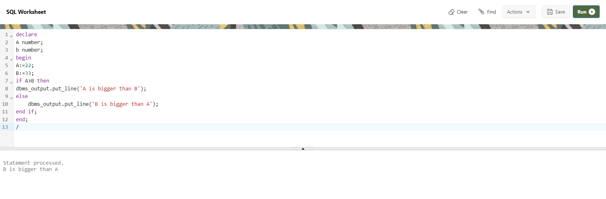

PL/SQL If
PL/SQL supports the programming language features like conditional statements and iterative statements. Its programming constructs are similar to how you use in programming languages like Java and C++.
Syntax
IF condition
THEN
Statement: {It is executed when condition is true}
END IF;
Example
declare
A number;
b number;
begin
A:=10;
B:=5;
if A>B then
dbms_output.put_line('A is bigger than B');
end if;
end;
/
(IF-THEN-ELSE-END IF)
Syntax
IF condition
THEN
{...statements to execute when condition is TRUE...}
ELSE
{...statements to execute when condition is FALSE...}
END IF;
Example
declare
A number;
b number;
begin
A:=22;
B:=33;
if A>B then
dbms_output.put_line('A is bigger than B');
else
dbms_output.put_line('B is bigger than A');
end if;
end;
/

IF-THEN-ELSIF-END IF
Syntax
IF condition1
THEN
{...statements to execute when condition1 is TRUE...}
ELSIF condition2
THEN
{...statements to execute when condition2 is TRUE...}
ELSE
{Statements}
END IF;
Example
declare
A number;
B number;
C number;
begin
A:=10;
B:=20;
C:=30;
if A>B then
if A>C then
dbms_output.put_line(A || 'is biggest');
else
dbms_output.put_line(C|| 'is biggest');
end if;
elsif B>C then
dbms_output.put_line(B||'is biggest');
else
dbms_output.put_line(C||' is biggest');
end if;
end;
/